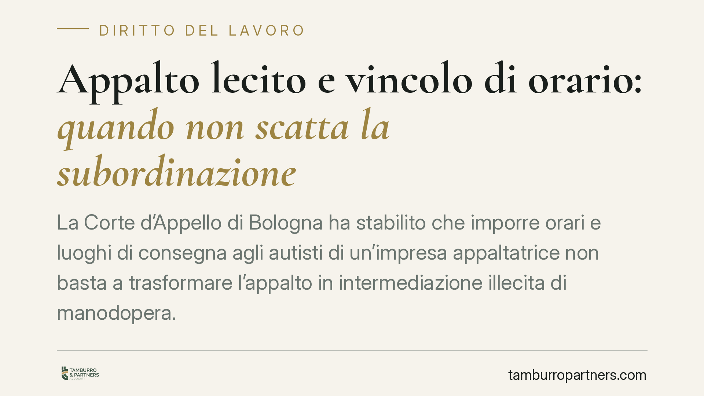

Appalto lecito e vincolo di orario: quando non scatta la subordinazione
La Corte d'Appello di Bologna ha stabilito che imporre orari e luoghi di consegna agli autisti di un'impresa appaltatrice non basta a trasformare l'appalto in intermediazione illecita di manodopera. La pronuncia riafferma il confine tra appalto genuino e somministrazione vietata: un tema decisivo per committenti e appaltatori che operano nella logistica e nei servizi.

Il caso
La vicenda riguarda un gruppo di autisti che chiedeva di essere considerato dipendente dell'azienda committente, e non delle imprese appaltatrici presso cui era formalmente inquadrato. L'argomento: i turni, gli orari e i luoghi delle consegne erano definiti dal committente. Secondo i lavoratori, quel vincolo dimostrava un potere direttivo tale da rendere fittizio l'appalto e reale la subordinazione con l'azienda finale.
La Corte d'Appello di Bologna ha respinto la ricostruzione. Fissare orari e destinazioni delle consegne rientra fisiologicamente nell'organizzazione di un servizio di logistica e non prova, da solo, che il committente eserciti il potere gerarchico tipico del datore di lavoro.
Inquadramento normativo
Il riferimento è l'art. 29 del D.Lgs. n. 276/2003. La norma distingue l'appalto genuino dalla mera somministrazione di manodopera (intermediazione illecita). L'appalto è lecito quando l'appaltatore organizza i mezzi necessari, esercita il potere direttivo sui propri dipendenti e assume il rischio d'impresa. Se invece l'appaltatore si limita a fornire braccia e il committente comanda direttamente i lavoratori, l'appalto è fittizio: il rapporto va imputato al committente.
Il punto delicato è capire *chi* esercita concretamente il potere direttivo. La giurisprudenza distingue tra due tipi di indicazioni:
- il coordinamento tecnico-operativo, cioè le istruzioni sul *risultato* del servizio (cosa consegnare, dove, entro quando), compatibile con l'appalto;
- il potere gerarchico, cioè le direttive sul *comportamento* del lavoratore (come lavorare, sanzioni disciplinari, gestione delle ferie), sintomo di subordinazione.
Definire orari e luoghi di consegna appartiene al primo gruppo: serve a coordinare il servizio, non a dirigere la persona.
Implicazioni pratiche
Per i committenti, la pronuncia offre un margine di sicurezza: dare all'appaltatore parametri di servizio — tempistiche, aree geografiche, standard qualitativi — non basta a far scattare l'assunzione dei lavoratori dell'appaltatore. È un dato rilevante nella logistica, dove il rispetto delle finestre di consegna è parte integrante della prestazione.
Attenzione però a non leggere la sentenza come un via libera generalizzato. Il confine resta sottile. Se il committente inizia a impartire ordini diretti ai singoli autisti, a organizzarne i turni individualmente, a valutarne la condotta o a gestirne le assenze, il quadro cambia. In quel caso l'appalto rischia di essere riqualificato come intermediazione illecita, con conseguente imputazione del rapporto di lavoro al committente e possibili profili sanzionatori.
La valutazione, in ogni caso, è sempre concreta: i giudici guardano al funzionamento reale del rapporto, non alle etichette del contratto.
Cosa fare in concreto
- Verificate l'organizzazione effettiva dell'appaltatore. L'impresa deve possedere mezzi propri, struttura e personale gestito in autonomia. La semplice fornitura di manodopera è il rischio principale.
- Distinguete le istruzioni sul servizio da quelle sui lavoratori. Indicate obiettivi, tempi e standard; lasciate all'appaltatore la gestione dei turni, delle ferie e della disciplina dei suoi dipendenti.
- Evitate contatti diretti gerarchici con i singoli addetti. Le comunicazioni operative dovrebbero passare dal referente dell'appaltatore, non tradursi in ordini individuali.
- Documentate il potere direttivo dell'appaltatore. Ordini di servizio, buste paga, contratti e organigrammi interni all'appaltatore sono elementi utili a dimostrare la genuinità dell'appalto in caso di contenzioso.
- Rivedete periodicamente il contratto e la prassi applicativa. Un testo formalmente corretto non protegge se la gestione quotidiana smentisce l'assetto pattuito.
Conclusione
La decisione della Corte d'Appello di Bologna conferma un principio già consolidato: nell'appalto lecito il committente può fissare i parametri del servizio senza per questo diventare datore di lavoro. Ciò che conta è chi esercita davvero il potere direttivo sulle persone. Per le imprese che operano con appalti di logistica e servizi, la lezione è chiara: costruire e mantenere una separazione reale tra coordinamento del servizio e gestione del personale è la migliore garanzia contro il rischio di riqualificazione.
Consigliamo di sottoporre a revisione i contratti di appalto esistenti e le relative prassi operative, così da allineare la struttura formale al funzionamento concreto del rapporto.
---
*Contributo informativo a cura di Tamburro & Partners - Avv. Giuseppe Tamburro. Non costituisce parere legale.*
Ogni storia di lavoro ha i suoi tempi.
Se gestisci HR e vuoi un confronto su contenzioso, ispezioni o licenziamenti, scrivi allo studio. Ti rispondiamo entro un giorno lavorativo.